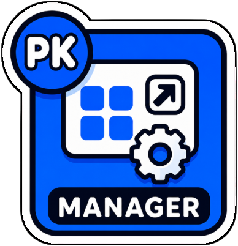
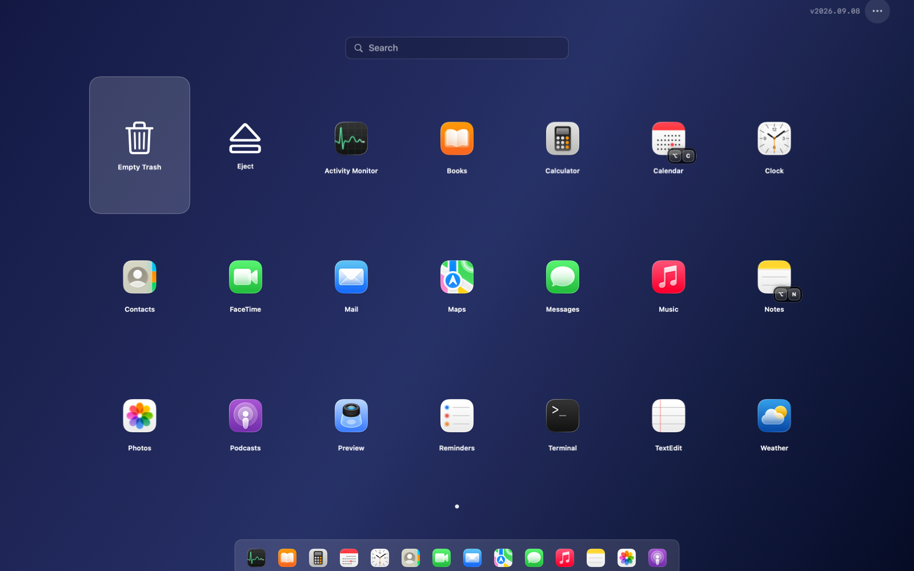
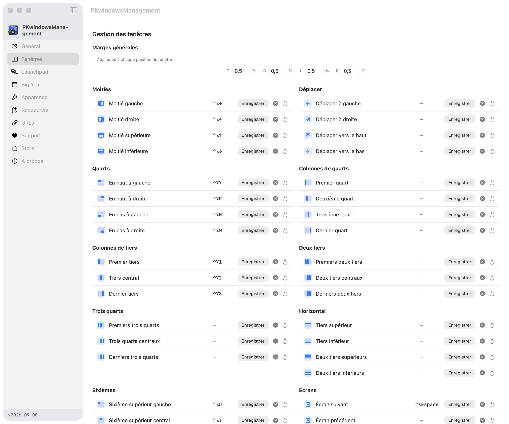
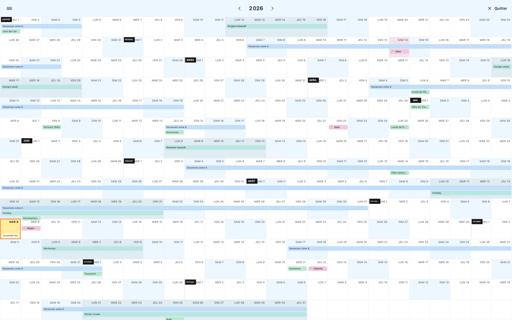
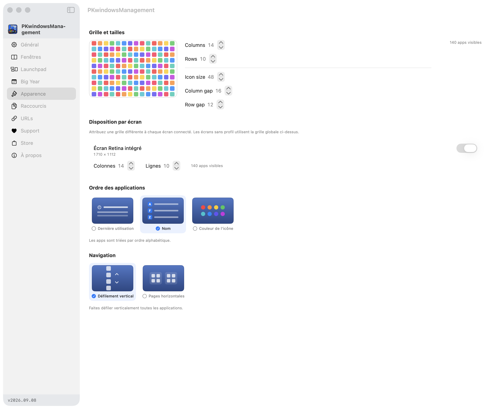

Du demi-écran au sur-mesure
Moitiés, tiers, deux tiers, quarts, trois quarts, coins et sixièmes : choisissez votre découpe. Répétez gauche ou droite pour cycler entre moitié, deux tiers et tiers.

PKwindowsManagementNatif macOS. Naturellement à vous.
Vos fenêtres à leur place. Vos apps à portée de touche.
Votre année en un regard. Gardez le fil, pas le désordre.
macOS 13+ Swift & SwiftUI Dans votre barre de menu

La capture du Launchpad sera bientôt disponible.
En mouvement
Du premier raccourci au dernier détail,
voyez le bureau prendre sa place.
La vidéo n’est pas disponible pour le moment. Retrouvez les fonctionnalités ci-dessous.
Gestion des fenêtres
Ne rangez plus votre bureau à la souris.
Composez votre espace au clavier, sur un écran ou plusieurs.
Moitié gauche : une fenêtre occupe la moitié gauche de l’écran.
Ctrl + Option + HMoitiés, tiers, deux tiers, quarts, trois quarts, coins et sixièmes : choisissez votre découpe. Répétez gauche ou droite pour cycler entre moitié, deux tiers et tiers.
Centrez, agrandissez ou réduisez depuis le centre, ajustez la hauteur ou la largeur, déplacez par petits pas et restaurez la position précédente. Marges et espacements sont réglables.
Envoyez la fenêtre à l’écran précédent ou suivant. Maximisez les fenêtres visibles de toutes les apps, ou seulement de l’app active. Le carrelage organise celles de l’app active sur un écran.
Le geste en situation
Lancez la capture animée pour voir le placement dans l’application.
Démo du placement de fenêtresAnimation à la demande
La capture animée n’est pas disponible pour le moment.
Launchpad
⌥ + Espace. Quelques lettres. Entrée.
Un raccourci entre votre idée et son application.
La capture du Launchpad sera bientôt disponible.
Une grille pour vos applications, vos commandes et vos snippets. Retrouvez les apps récentes, triez par nom, dernière utilisation ou couleur dominante des icônes. Naviguez au trackpad, en scroll vertical ou par pages horizontales alignées en haut.
Le même point d’entrée, dans une fenêtre discrète en liste. Filtrez apps, commandes et snippets au clavier. Choisissez son ambiance : clair, sombre, Catppuccin ou verre. Un format plus léger visuellement, sans quitter votre contexte.
Trois façons de l’ouvrir. Option + Espace, un coin actif configurable ou un clic sur l’icône de la barre de menu.
Un calcul, au passage. Saisissez une expression dans la recherche. Entrée copie le résultat, sans ouvrir de calculatrice.
Les commandes utiles. Videz la Corbeille via Finder ou lancez l’éjection des volumes montés. Le menu contextuel d’une app permet d’attribuer un raccourci ou de la déplacer à la Corbeille.
Raccourcis globaux
Pas besoin d’ouvrir le Launchpad.
Vos raccourcis fonctionnent partout sur macOS.
Command, Option et Shift distinguent la gauche de la droite. Associez Control + Option, Command, Option, Shift ou Fn + Shift à vos lancements.
Enregistrez votre combinaison directement au clavier. Des boutons dédiés donnent accès à Espace, Entrée, Tabulation, Supprimer et aux flèches ; les raccourcis attribués s’affichent sur les icônes.

La capture des raccourcis sera bientôt disponible.
Scripts & URLs
Créez des snippets exécutables et attribuez-leur un raccourci global. Les scripts et les URLs ont chacun leur onglet dans les réglages. N’exécutez que des scripts de confiance.
Enregistrez une URL, choisissez son navigateur et ouvrez-la au clavier, directement depuis le Launchpad ou avec son raccourci global.
Archive range le Bureau dans une archive locale mensuelle, puis recopie vers Google Drive en arrière-plan, selon les chemins du script. DL2desk déplace Téléchargements vers le Bureau et renomme les conflits. Leurs raccourcis par défaut : Command droite + S et Command droite + L.
Big Year
Douze mois. Aucun scroll.
Une vue annuelle pour voir au-delà de la prochaine réunion.

La capture de Big Year sera bientôt disponible.
Week-ends, jours fériés français, vacances scolaires des zones A, B ou C et anniversaires. Cliquez sur un jour pour ajouter un événement ou une plage de dates ; la saisie texte reste disponible.
Activez l’import des événements journée entière des comptes déjà configurés dans Calendrier macOS, y compris Google. L’accès au calendrier est demandé uniquement pour cette intégration.
Personnalisez les couleurs, mettez les mois ou anniversaires en gras et marquez les événements importants avec « ! ». Les réglages disposent d’un aperçu vivant. Fermez avec Échap, Command + W ou le bouton dédié.

La capture des réglages d’apparence sera bientôt disponible.
Les détails font votre bureau
Bien démarrer
Pas d’interface web déguisée. Une app Swift et SwiftUI qui s’appuie sur les API de macOS pour agir sur vos fenêtres.
Consulter les instructions d’installationSuivez les instructions de compilation et d’installation du dépôt. macOS 13 ou plus et Swift tools 5.10 sont les prérequis indiqués.
Dans Réglages Système → Confidentialité et sécurité → Accessibilité. L’app indique l’état de l’autorisation et propose un accès aux réglages.
Finder demande une autorisation d’automatisation pour vider la Corbeille. Calendrier demande un accès si vous activez son intégration. Les snippets agissent réellement sur vos fichiers : vérifiez leurs chemins avant utilisation.
Quelques réponses
PKwindowsManagement nécessite macOS 13 ou plus. Le dépôt fournit les instructions de compilation avec Swift tools 5.10 et les scripts pour créer le bundle de l’application.
Consultez le dépôt GitHub pour connaître les fichiers disponibles et la procédure d’installation actuelle. Cette page ne suppose pas la disponibilité d’une version précompilée.
Cette autorisation permet de contrôler les fenêtres via les API macOS et d’écouter les raccourcis globaux. Si une fenêtre ne réagit pas, vérifiez cette permission et les éventuelles restrictions de l’app cible. Garder le bundle au même chemin et utiliser les scripts de packaging aide à conserver une autorisation stable.
Oui. Les raccourcis globaux des applications, snippets et URLs restent actifs lorsque le Launchpad est fermé, tant que PKwindowsManagement fonctionne et dispose des permissions nécessaires. Vous pouvez distinguer les modificateurs gauche et droite.
Non. L’intégration importe les événements journée entière des comptes configurés dans l’app Calendrier de macOS. Elle ne se connecte pas directement à Google et ne constitue pas une synchronisation bidirectionnelle de tous les rendez-vous.
Les réglages sont enregistrés localement. Utilisez l’import/export JSON pour les transférer, ou activez les sauvegardes automatiques dans le dossier de votre choix. La synchronisation d’un dossier Google Drive dépend de votre installation Google Drive.
PKwindowsManagement
Pensé pour votre clavier. Conçu pour votre Mac.